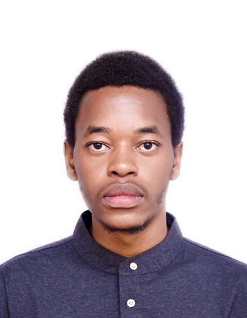

I am building skills in computer science, data science, creative tech, and game development so I can create useful, smart, and well-designed digital projects.
Get in Touch
My interest started with curiosity. I wanted to understand how technology works behind the scenes and how games are built from ideas into interactive experiences. That curiosity grew into a real goal: to learn the skills needed to create my own projects instead of just using what others build.
Transforming high-level climate warnings into actionable local steps through mobile, SMS, and USSD access.
Pitch Deck Wireframes